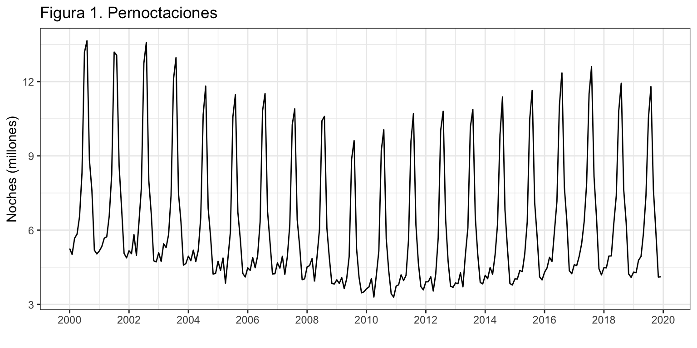
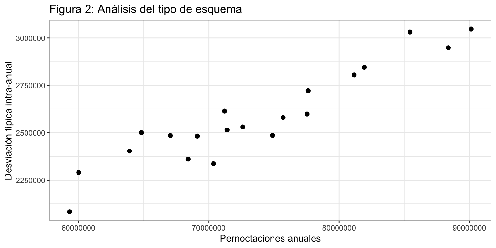
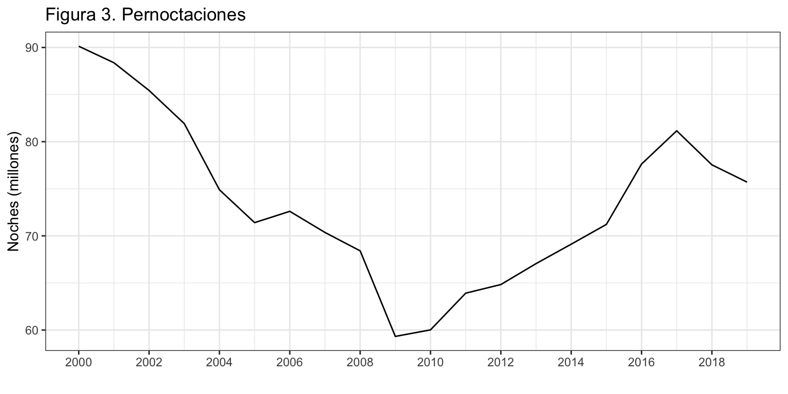
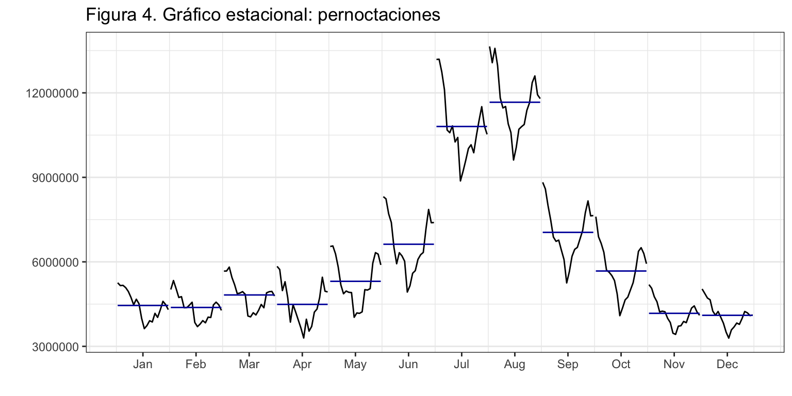
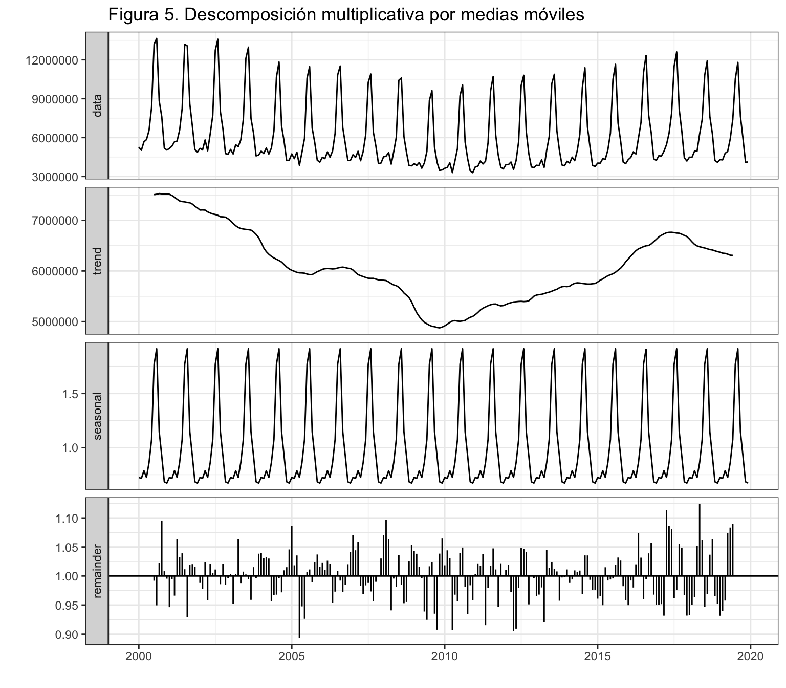
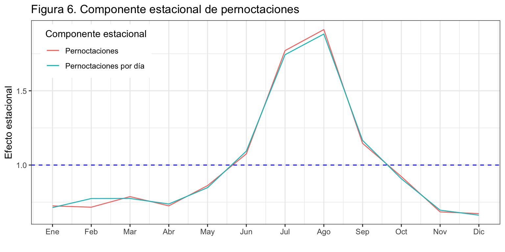
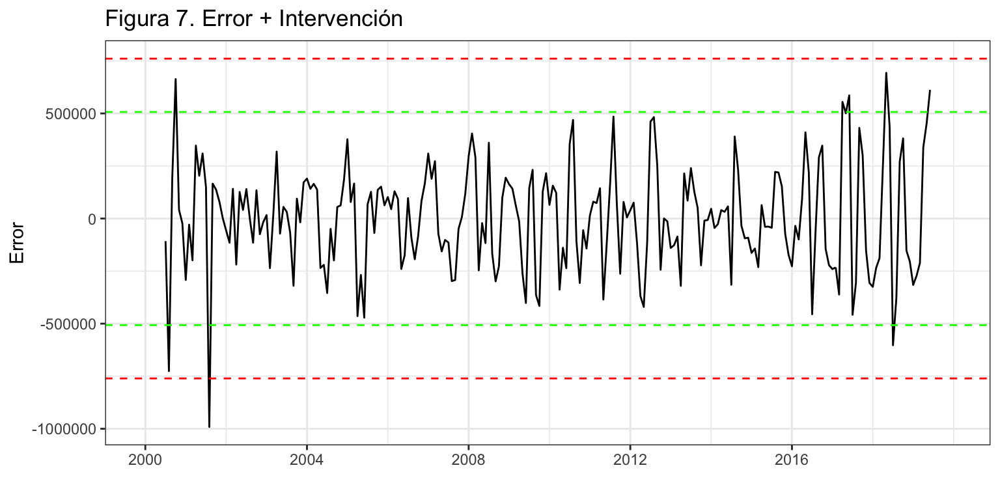

Introducción
Vamos a considerar la serie temporal correspondiente al número de pernoctaciones que los turistas extranjeros realizan en España en alojamientos turísticos autorizados (que llamaremos Pernoctaciones en adelante). Esta serie está disponible en Eurostat desde enero de 2000 hasta diciembre de 2019, un total de 20 años y 240 observaciones.
La serie y su fechado están en el fichero “Pernoctaciones.csv”.
Análisis preliminar gráfico
La gráfica de la serie temporal (figura 1) muestra una tendencia decreciente en el número de pernoctaciones en la primera década del presente siglo, más marcada al inicio de la pasada crisis económica. Con el cambio de década se produce un cambio en la tendencia, aunque en los dos últimos años se ha producido una caída en el número de pernoctaciones.
Las líneas verticales de la figura 1 marcan los meses de enero de cada año y permiten identificar mejor la posible componente estacional. Las pernoctaciones aumentan drásticamente en verano, especialmente en Julio y Agosto, asociadas a las vacaciones estivales. En menor medida se observa el efecto de la Semana Santa. Más adelante haremos un análisis detallado de la estacionalidad.

Parece que conforme disminuye el número pernoctaciones, también disminuye la amplitud estacional. Al inicio del siglo la diferencia entre los meses con más y con menos pernoctaciones superaba los 8 millones de pernoctaciones, mientras que a finales de la primera década esta diferencia no llegaba a los 7 millones de pernoctaciones. Parece, por tanto, que estamos ante un esquema multiplicativo. Para confirmar este aspecto, se ha realizado un gráfico de puntos entre el numero anual de pernoctaciones y la desviación típica intra-anual (figura 2).

Efectivamente, los años con mayor número de pernoctaciones se corresponden con una mayor variabilidad intra-anual, por lo que confirmamos el esquema multiplicativo de la serie.
Análisis de las componentes
Tendencia
Hemos obtenido la serie anual pernoctaciones, que presentamos en la figura 3. Se confirma la tendencia decreciente de la primera década. En el año 2000 el número de pernoctaciones alcanzaba las 90 millones al año, mientras que en 2009 toco fondo con menos de 60 millones. En los años siguientes se produce una recuperación de las pernoctaciones (a pesar de la crisis económica), sin llegarse a recuperar los niveles de principios de siglo. En los dos últimos años disponibles las pernoctaciones han vuelto a caer.

Estacionalidad
Veamos ahora como varían las pernoctaciones de los turistas extranjeros en España según el mes del año.

Cada subserie en la figura 4 vuelve a mostrar la evolución de la tendencia durante el periodo de análisis. Respecto de la estacionalidad, se aprecia que el principal determinante son las vacaciones estivales puesto que el número de pernoctaciones aumenta progresivamente desde mayo a agosto para luego caer bruscamente en septiembre. También cabría esperar un efecto días del mes y observar más pernoctaciones en los meses de 31 días que en los de 30, pero el efecto de la vacaciones estivales es tan dominante que anula cualquier otro efecto.
La mayor irregularidad observada en abril puede deberse a si la Semana Santa ha caído en abril o en marzo.
Descomposición
Vamos a obtener cada una de las componentes de la serie usando el método de medias móviles decompose. Se ha optado por este método dado que la serie muestra un esquema multiplicativo. Otra opción hubiera sido usar el método de regresiones locales ponderadas trabajando con el logaritmo de la serie, pero entonces hubiéramos perdiendo interpretabilidad.

La tendencia obtenida tras la descomposición no hace sino confirmar lo ya observado, una tendencia decreciente en la primera década, y creciente desde entonces hasta los dos últimos años.
También se aprecian muy claramente varios valores atípicos en el residuo destacando uno en 2005 y varios en los últimos años.
Respecto de la componente estacional, se confirma el análisis preliminar: mayor número de pernoctaciones a finales de primavera y verano, especialmente en agosto, y un menor número en invierno, especialmente en diciembre –un mes en que la gente no realiza tantos viales al extranjero. En concreto, en agosto se detecta un 91% más de pernoctaciones respecto de la media anual y en julio un 77% más. Por contra, en diciembre se observa un descenso del 33%, similar al de noviembre. Cabría preguntarse las causas del repunte en marzo, aunque puede deberse a ser un mes de 31 días, comparado con febrero, en el que ocasionalmente cae la Semana Santa.
[1] 0.73 0.72 0.79 0.73 0.86 1.08 1.77 1.91 1.15 0.92 0.68 0.67
A fin de aislar de la componente estacional el efecto días del mes del efecto de las vacaciones estivales, se ha aplicado la descomposición a la serie pernoctaciones por día resultante de dividir la serie original por el número de días del mes (que obtenemos con la función monthdays). En esta nueva serie todo el efecto estacional se deberá a las vacaciones de verano.
La figura 6 muestra que la componente estacional estimada para las pernoctaciones por día es solo algo más suave que la componente obtenida a partir la serie original. También se aprecia que el efecto del tamaño del mes es muy acusado en febrero. Para este mes el efecto estacional es el resultado de dos fuerzas, no ser un periodo vacacional y el tamaño del mes (28 días), en la misma dirección que decrementan la componente estacional. Sobre la serie original ambas fuerzas tienen lugar y el resultado es una componente estacional para febrero menor que la de marzo. En la serie de pernoctaciones por día el efecto número de días del mes ha sido eliminado, solo queda el efecto vacacional que es similar para febrero y marzo y por eso la componente de febrero es similar a la de marzo.
PernoctacionesDiaDesMul <- decompose(Pernoctaciones/monthdays(Pernoctaciones), type = "mult")
ggplot() +
geom_line(aes(x = 1:12, y = PernoctacionesDesMul$figure, colour = "black")) +
geom_line(aes(x = 1:12, y = PernoctacionesDiaDesMul$figure, colour = "red")) +
geom_hline(yintercept = 1, colour = "blue", lty = 2) +
ggtitle("Figura 6. Componente estacional de pernoctaciones") +
xlab("") +
ylab("Efecto estacional") +
scale_x_continuous(breaks= 1:12,
labels = c("Ene", "Feb", "Mar", "Abr", "May", "Jun",
"Jul", "Ago", "Sep", "Oct", "Nov", "Dic")) +
scale_color_discrete(name = "Componente estacional",
labels = c("Pernoctaciones", "Pernoctaciones por día")) +
theme(legend.position=c(0.02,0.98), legend.justification=c(0,1))

Identificación de meses atípicos
En la descomposición, el vector de residuos contiene las componentes del error y la intervención. Vamos a realizar un análisis gráfico informal del residuo que nos permite ir identificando posibles intervenciones.
Como la descomposición es multiplicativa, el error es en tanto por uno y tiene media 1. Para analizar las propiedades del residuo, vamos a calcularlo como error aditivo. Para ello vamos a restar a la serie original la serie estimada, obtenida como el producto de la tendencia por la estacionalidad, es decir, \(R_t = y_t - (T_t * S_t)\).
La figura 7 muestra el error y los intervalos de confianza (IC) al 95% (líneas en verde) y al 99.7% (líneas en rojo). Se observa un valor claramente extremo que cruza el IC(99.7%) por la parte inferior de la gráfica. Es agosto de 2001, mes en el que las pernoctaciones fueron muy inferiores a lo esperado. También se observan otros valores atípicos, en los que el error supera las 2.5 desviaciones típicas: agosto y octubre de 2000 y mayo de 2018.
error <- Pernoctaciones - trendcycle(PernoctacionesDesMul) * seasonal(PernoctacionesDesMul)
sderror <- sd(error, na.rm = TRUE)
autoplot(error,
xlab = "",
ylab = "Error",
main = "Figura 7. Error + Intervención",
colour = "black") +
geom_hline(yintercept = c(3, 2, -2, -3)*sderror,
colour = c("red", "green", "green", "red"),
lty = 2) +
scale_x_continuous(breaks= seq(1980, 2018, 4))

LS0tCnRpdGxlOiAiUGVybm9jdGFjaW9uZXMgZW4gYWxvamFtaWVudG9zIHR1csOtc3RpY29zIGRlIHR1cmlzdGFzIGV4dHJhbmplcm9zIgpzdWJ0aXRsZTogIkRlc2NyaXB0aXZhIgphdXRob3I6ICJJdsOhbiBBcnJpYmFzIChEZXB0by4gQW7DoWxpc2lzIEVjb27Ds21pY28uIFVuaXZlcnNpdGF0IGRlIFZhbMOobmNpYSkiCm91dHB1dDogCiAgaHRtbF9kb2N1bWVudDoKICAgIHRoZW1lOiBjZXJ1bGVhbgogICAgaGlnaGxpZ2h0OiBweWdtZW50cyAKICAgIGZpZ19jYXB0aW9uOiBmYWxzZQogICAgZGZfcHJpbnQ6IGthYmxlCiAgICB0b2M6IHRydWUKICAgIHRvY19kZXB0aDogMgogICAgdG9jX2Zsb2F0OiAKICAgICAgY29sbGFwc2VkOiB0cnVlCiAgICBudW1iZXJfc2VjdGlvbnM6IHRydWUKICAgIHNlbGZfY29udGFpbmVkOiB0cnVlCiAgICBjb2RlX2Rvd25sb2FkOiB0cnVlCi0tLQoKYGBge3IgY2h1bmtfc2V0dXAsIGVjaG8gPSBGQUxTRX0Ka25pdHI6Om9wdHNfY2h1bmskc2V0KHdhcm5pbmcgPSBGQUxTRSwgCiAgICAgICAgICAgICAgICAgICAgICBtZXNzYWdlID0gRkFMU0UsIAogICAgICAgICAgICAgICAgICAgICAgY29tbWVudCA9ICIiLAogICAgICAgICAgICAgICAgICAgICAgZmlnLmFsaWduID0gImNlbnRlciIsIAogICAgICAgICAgICAgICAgICAgICAgZmlnLnNob3cgPSAiaG9sZCIsCiAgICAgICAgICAgICAgICAgICAgICBmaWcuaGVpZ2h0ID0gNCwKICAgICAgICAgICAgICAgICAgICAgIGZpZy53aWR0aCA9IDgsCiAgICAgICAgICAgICAgICAgICAgICBvdXQud2lkdGggPSAiODAlIikgCmBgYAoKYGBge3Igb3B0aW9uc19zZXR1cCwgZWNobyA9IEZBTFNFfQpvcHRpb25zKHNjaXBlbiA9IDk5OSkgIy0gcGFyYSBxdWl0YXIgbGEgbm90YWNpb24gY2llbnRpZmljYQpgYGAKCmBgYHtyIGxpYnJlcmlhcywgZWNobyA9IEZBTFNFfQpsaWJyYXJ5KGZvcmVjYXN0KQpsaWJyYXJ5KGdncGxvdDIpOyB0aGVtZV9zZXQodGhlbWVfYncoKSkKbGlicmFyeShncmlkRXh0cmEpCmxpYnJhcnkoZ3JpZCkKYGBgCgpcClwKCiMgSW50cm9kdWNjacOzbgoKVmFtb3MgYSBjb25zaWRlcmFyIGxhIHNlcmllIHRlbXBvcmFsIGNvcnJlc3BvbmRpZW50ZSBhbCBuw7ptZXJvIGRlIHBlcm5vY3RhY2lvbmVzIHF1ZSBsb3MgdHVyaXN0YXMgZXh0cmFuamVyb3MgcmVhbGl6YW4gZW4gRXNwYcOxYSBlbiBhbG9qYW1pZW50b3MgdHVyw61zdGljb3MgYXV0b3JpemFkb3MgKHF1ZSBsbGFtYXJlbW9zIFBlcm5vY3RhY2lvbmVzIGVuIGFkZWxhbnRlKS4gRXN0YSBzZXJpZSBlc3TDoSBkaXNwb25pYmxlIGVuIEV1cm9zdGF0IGRlc2RlIGVuZXJvIGRlIDIwMDAgaGFzdGEgZGljaWVtYnJlIGRlIDIwMTksIHVuIHRvdGFsIGRlIDIwIGHDsW9zIHkgMjQwIG9ic2VydmFjaW9uZXMuCgpMYSBzZXJpZSB5IHN1IGZlY2hhZG8gZXN0w6FuIGVuIGVsIGZpY2hlcm8gIlBlcm5vY3RhY2lvbmVzLmNzdiIuCgoKYGBge3J9ClBlcm5vY3RhY2lvbmVzIDwtIHJlYWQuY3N2MigiLi9zZXJpZXMvUGVybm9jdGFjaW9uZXMuY3N2IiwgaGVhZGVyID0gVFJVRSkKUGVybm9jdGFjaW9uZXMgPC0gdHMoUGVybm9jdGFjaW9uZXNbLDJdLCBzdGFydCA9IDIwMDAsIGZyZXEgPSAxMikKYGBgCgpcClwKCiMgQW7DoWxpc2lzIHByZWxpbWluYXIgZ3LDoWZpY28KCkxhIGdyw6FmaWNhIGRlIGxhIHNlcmllIHRlbXBvcmFsIChmaWd1cmEgMSkgbXVlc3RyYSB1bmEgX190ZW5kZW5jaWFfXyBkZWNyZWNpZW50ZSBlbiBlbCBuw7ptZXJvIGRlIHBlcm5vY3RhY2lvbmVzIGVuIGxhIHByaW1lcmEgZMOpY2FkYSBkZWwgcHJlc2VudGUgc2lnbG8sIG3DoXMgbWFyY2FkYSBhbCBpbmljaW8gZGUgbGEgcGFzYWRhIGNyaXNpcyBlY29uw7NtaWNhLiBDb24gZWwgY2FtYmlvIGRlIGTDqWNhZGEgc2UgcHJvZHVjZSB1biBjYW1iaW8gZW4gbGEgdGVuZGVuY2lhLCBhdW5xdWUgZW4gbG9zIGRvcyDDumx0aW1vcyBhw7FvcyBzZSBoYSBwcm9kdWNpZG8gdW5hIGNhw61kYSBlbiBlbCBuw7ptZXJvIGRlIHBlcm5vY3RhY2lvbmVzLiAKCkxhcyBsw61uZWFzIHZlcnRpY2FsZXMgZGUgbGEgZmlndXJhIDEgbWFyY2FuIGxvcyBtZXNlcyBkZSBlbmVybyBkZSBjYWRhIGHDsW8geSBwZXJtaXRlbiBpZGVudGlmaWNhciBtZWpvciBsYSBwb3NpYmxlIF9fY29tcG9uZW50ZSBlc3RhY2lvbmFsX18uIExhcyBwZXJub2N0YWNpb25lcyBhdW1lbnRhbiBkcsOhc3RpY2FtZW50ZSBlbiB2ZXJhbm8sIGVzcGVjaWFsbWVudGUgZW4gSnVsaW8geSBBZ29zdG8sIGFzb2NpYWRhcyBhIGxhcyB2YWNhY2lvbmVzIGVzdGl2YWxlcy4gRW4gbWVub3IgbWVkaWRhIHNlIG9ic2VydmEgZWwgZWZlY3RvIGRlIGxhIFNlbWFuYSBTYW50YS4gTcOhcyBhZGVsYW50ZSBoYXJlbW9zIHVuIGFuw6FsaXNpcyBkZXRhbGxhZG8gZGUgbGEgZXN0YWNpb25hbGlkYWQuCgpgYGB7cn0KYXV0b3Bsb3QoUGVybm9jdGFjaW9uZXMvMTAwMDAwMCwKICAgICAgICAgeGxhYiA9ICIiLAogICAgICAgICB5bGFiID0gIk5vY2hlcyAobWlsbG9uZXMpIiwKICAgICAgICAgbWFpbiA9ICJGaWd1cmEgMS4gUGVybm9jdGFjaW9uZXMiKSArCiAgc2NhbGVfeF9jb250aW51b3VzKGJyZWFrcz0gc2VxKDIwMDAsIDIwMjAsIDIpKSAKYGBgCgpQYXJlY2UgcXVlIGNvbmZvcm1lIGRpc21pbnV5ZSBlbCBuw7ptZXJvIHBlcm5vY3RhY2lvbmVzLCB0YW1iacOpbiBkaXNtaW51eWUgbGEgYW1wbGl0dWQgZXN0YWNpb25hbC4gQWwgaW5pY2lvIGRlbCBzaWdsbyBsYSBkaWZlcmVuY2lhIGVudHJlIGxvcyBtZXNlcyBjb24gbcOhcyB5IGNvbiBtZW5vcyBwZXJub2N0YWNpb25lcyBzdXBlcmFiYSBsb3MgOCBtaWxsb25lcyBkZSBwZXJub2N0YWNpb25lcywgbWllbnRyYXMgcXVlIGEgZmluYWxlcyBkZSBsYSBwcmltZXJhIGTDqWNhZGEgZXN0YSBkaWZlcmVuY2lhIG5vIGxsZWdhYmEgYSBsb3MgNyBtaWxsb25lcyBkZSBwZXJub2N0YWNpb25lcy4gUGFyZWNlLCBwb3IgdGFudG8sIHF1ZSBlc3RhbW9zIGFudGUgdW4gX19lc3F1ZW1hIG11bHRpcGxpY2F0aXZvX18uIFBhcmEgY29uZmlybWFyIGVzdGUgYXNwZWN0bywgc2UgaGEgcmVhbGl6YWRvIHVuIGdyw6FmaWNvIGRlIHB1bnRvcyBlbnRyZSBlbCBudW1lcm8gYW51YWwgZGUgcGVybm9jdGFjaW9uZXMgeSBsYSBkZXN2aWFjacOzbiB0w61waWNhIGludHJhLWFudWFsIChmaWd1cmEgMikuCgpgYGB7cn0KQ2Fzb3NBbnVhbCA9IGFzLm51bWVyaWMoYWdncmVnYXRlKFBlcm5vY3RhY2lvbmVzLCBGVU4gPSBzdW0pKQpEZXN2aWFjaW9uQW51YWwgPSBhcy5udW1lcmljKGFnZ3JlZ2F0ZShQZXJub2N0YWNpb25lcywgRlVOID0gc2QpKQoKZ2dwbG90KCkgKwogIGdlb21fcG9pbnQoYWVzKHggPSBDYXNvc0FudWFsLCB5ID0gRGVzdmlhY2lvbkFudWFsKSwgc2l6ZSA9IDIpICsKICB4bGFiKCJQZXJub2N0YWNpb25lcyBhbnVhbGVzIikgKyAKICB5bGFiKCJEZXN2aWFjacOzbiB0w61waWNhIGludHJhLWFudWFsIikgKyAKICBnZ3RpdGxlKCJGaWd1cmEgMjogQW7DoWxpc2lzIGRlbCB0aXBvIGRlIGVzcXVlbWEiKSAKYGBgCgpFZmVjdGl2YW1lbnRlLCBsb3MgYcOxb3MgY29uIG1heW9yIG7Dum1lcm8gZGUgcGVybm9jdGFjaW9uZXMgc2UgY29ycmVzcG9uZGVuIGNvbiB1bmEgbWF5b3IgdmFyaWFiaWxpZGFkIGludHJhLWFudWFsLCBwb3IgbG8gcXVlIGNvbmZpcm1hbW9zIGVsIGVzcXVlbWEgbXVsdGlwbGljYXRpdm8gZGUgbGEgc2VyaWUuCgpcClwKCiMgQW7DoWxpc2lzIGRlIGxhcyBjb21wb25lbnRlcwoKXAoKIyMgVGVuZGVuY2lhCgpIZW1vcyBvYnRlbmlkbyBsYSBzZXJpZSBhbnVhbCBwZXJub2N0YWNpb25lcywgcXVlIHByZXNlbnRhbW9zIGVuIGxhIGZpZ3VyYSAzLiBTZSBjb25maXJtYSBsYSB0ZW5kZW5jaWEgZGVjcmVjaWVudGUgZGUgbGEgcHJpbWVyYSBkw6ljYWRhLiBFbiBlbCBhw7FvIDIwMDAgZWwgbsO6bWVybyBkZSBwZXJub2N0YWNpb25lcyBhbGNhbnphYmEgbGFzIDkwIG1pbGxvbmVzIGFsIGHDsW8sIG1pZW50cmFzIHF1ZSBlbiAyMDA5IHRvY28gZm9uZG8gY29uIG1lbm9zIGRlIDYwIG1pbGxvbmVzLiBFbiBsb3MgYcOxb3Mgc2lndWllbnRlcyBzZSBwcm9kdWNlIHVuYSByZWN1cGVyYWNpw7NuIGRlIGxhcyBwZXJub2N0YWNpb25lcyAoYSBwZXNhciBkZSBsYSBjcmlzaXMgZWNvbsOzbWljYSksIHNpbiBsbGVnYXJzZSBhIHJlY3VwZXJhciBsb3Mgbml2ZWxlcyBkZSBwcmluY2lwaW9zIGRlIHNpZ2xvLiBFbiBsb3MgZG9zIMO6bHRpbW9zIGHDsW9zIGRpc3BvbmlibGVzIGxhcyBwZXJub2N0YWNpb25lcyBoYW4gdnVlbHRvIGEgY2Flci4KCmBgYHtyfQphdXRvcGxvdChhZ2dyZWdhdGUoUGVybm9jdGFjaW9uZXMvMTAwMDAwMCwgRlVOID0gc3VtKSwKICAgICAgICAgeGxhYiA9ICIiLAogICAgICAgICB5bGFiID0gIk5vY2hlcyAobWlsbG9uZXMpIiwKICAgICAgICAgbWFpbiA9ICJGaWd1cmEgMy4gUGVybm9jdGFjaW9uZXMiKSArCiAgc2NhbGVfeF9jb250aW51b3VzKGJyZWFrcz0gc2VxKDIwMDAsIDIwMjAsIDIpKSAKYGBgCgpcCgojIyBFc3RhY2lvbmFsaWRhZAoKVmVhbW9zIGFob3JhIGNvbW8gdmFyw61hbiBsYXMgcGVybm9jdGFjaW9uZXMgZGUgbG9zIHR1cmlzdGFzIGV4dHJhbmplcm9zIGVuIEVzcGHDsWEgc2Vnw7puIGVsIG1lcyBkZWwgYcOxby4gCgpgYGB7cn0KZ2dtb250aHBsb3QoUGVybm9jdGFjaW9uZXMsIAogICAgICAgICAgICAgcG9sYXI9VFJVRSwKICAgICAgICAgICAgIHhsYWIgPSAiIiwKICAgICAgICAgICAgIHlsYWIgPSAiIiwKICAgICAgICAgICAgIG1haW4gPSAiRmlndXJhIDQuIEdyw6FmaWNvIGVzdGFjaW9uYWw6IHBlcm5vY3RhY2lvbmVzIikgKwogIGd1aWRlcyhjb2xvdXI9RkFMU0UpCmBgYAoKQ2FkYSBzdWJzZXJpZSBlbiBsYSBmaWd1cmEgNCB2dWVsdmUgYSBtb3N0cmFyIGxhIGV2b2x1Y2nDs24gZGUgbGEgdGVuZGVuY2lhIGR1cmFudGUgZWwgcGVyaW9kbyBkZSBhbsOhbGlzaXMuIFJlc3BlY3RvIGRlIGxhIGVzdGFjaW9uYWxpZGFkLCBzZSBhcHJlY2lhIHF1ZSBlbCBwcmluY2lwYWwgZGV0ZXJtaW5hbnRlIHNvbiBsYXMgdmFjYWNpb25lcyBlc3RpdmFsZXMgcHVlc3RvIHF1ZSBlbCBuw7ptZXJvIGRlIHBlcm5vY3RhY2lvbmVzIGF1bWVudGEgcHJvZ3Jlc2l2YW1lbnRlIGRlc2RlIG1heW8gYSBhZ29zdG8gcGFyYSBsdWVnbyBjYWVyIGJydXNjYW1lbnRlIGVuIHNlcHRpZW1icmUuIFRhbWJpw6luIGNhYnLDrWEgZXNwZXJhciB1biBlZmVjdG8gX2TDrWFzIGRlbCBtZXNfIHkgb2JzZXJ2YXIgbcOhcyBwZXJub2N0YWNpb25lcyBlbiBsb3MgbWVzZXMgZGUgMzEgZMOtYXMgcXVlIGVuIGxvcyBkZSAzMCwgcGVybyBlbCBlZmVjdG8gZGUgbGEgdmFjYWNpb25lcyBlc3RpdmFsZXMgZXMgdGFuIGRvbWluYW50ZSBxdWUgYW51bGEgY3VhbHF1aWVyIG90cm8gZWZlY3RvLgoKTGEgbWF5b3IgaXJyZWd1bGFyaWRhZCBvYnNlcnZhZGEgZW4gYWJyaWwgcHVlZGUgZGViZXJzZSBhIHNpIGxhIFNlbWFuYSBTYW50YSBoYSBjYcOtZG8gZW4gYWJyaWwgbyBlbiBtYXJ6by4gCgpcClwKCiMgRGVzY29tcG9zaWNpw7NuCgpWYW1vcyBhIG9idGVuZXIgY2FkYSB1bmEgZGUgbGFzIGNvbXBvbmVudGVzIGRlIGxhIHNlcmllIHVzYW5kbyBlbCBtw6l0b2RvIGRlIG1lZGlhcyBtw7N2aWxlcyBgZGVjb21wb3NlYC4gU2UgaGEgb3B0YWRvIHBvciBlc3RlIG3DqXRvZG8gZGFkbyBxdWUgbGEgc2VyaWUgbXVlc3RyYSB1biBlc3F1ZW1hIG11bHRpcGxpY2F0aXZvLiBPdHJhIG9wY2nDs24gaHViaWVyYSBzaWRvIHVzYXIgZWwgbcOpdG9kbyBkZSByZWdyZXNpb25lcyBsb2NhbGVzIHBvbmRlcmFkYXMgdHJhYmFqYW5kbyBjb24gZWwgbG9nYXJpdG1vIGRlIGxhIHNlcmllLCBwZXJvIGVudG9uY2VzIGh1YmnDqXJhbW9zIHBlcmRpZW5kbyBpbnRlcnByZXRhYmlsaWRhZC4KCmBgYHtyLCBmaWcuaGVpZ2h0PTd9ClBlcm5vY3RhY2lvbmVzRGVzTXVsIDwtIGRlY29tcG9zZShQZXJub2N0YWNpb25lcywgdHlwZSA9ICJtdWx0IikKYXV0b3Bsb3QoUGVybm9jdGFjaW9uZXNEZXNNdWwsCiAgICAgICAgIHhsYWIgPSAiIiwKICAgICAgICAgbWFpbiA9ICJGaWd1cmEgNS4gRGVzY29tcG9zaWNpw7NuIG11bHRpcGxpY2F0aXZhIHBvciBtZWRpYXMgbcOzdmlsZXMiKQpgYGAKCkxhIF9fdGVuZGVuY2lhX18gb2J0ZW5pZGEgdHJhcyBsYSBkZXNjb21wb3NpY2nDs24gbm8gaGFjZSBzaW5vIGNvbmZpcm1hciBsbyB5YSBvYnNlcnZhZG8sIHVuYSB0ZW5kZW5jaWEgZGVjcmVjaWVudGUgZW4gbGEgcHJpbWVyYSBkw6ljYWRhLCB5IGNyZWNpZW50ZSBkZXNkZSBlbnRvbmNlcyBoYXN0YSBsb3MgZG9zIMO6bHRpbW9zIGHDsW9zLgoKVGFtYmnDqW4gc2UgYXByZWNpYW4gbXV5IGNsYXJhbWVudGUgdmFyaW9zIHZhbG9yZXMgYXTDrXBpY29zIGVuIGVsIF9fcmVzaWR1b19fIGRlc3RhY2FuZG8gdW5vIGVuIDIwMDUgeSB2YXJpb3MgZW4gbG9zIMO6bHRpbW9zIGHDsW9zLgoKUmVzcGVjdG8gZGUgbGEgX19jb21wb25lbnRlIGVzdGFjaW9uYWxfXywgc2UgY29uZmlybWEgZWwgYW7DoWxpc2lzIHByZWxpbWluYXI6IG1heW9yIG7Dum1lcm8gZGUgcGVybm9jdGFjaW9uZXMgYSBmaW5hbGVzIGRlIHByaW1hdmVyYSB5IHZlcmFubywgZXNwZWNpYWxtZW50ZSBlbiBhZ29zdG8sIHkgdW4gbWVub3IgbsO6bWVybyBlbiBpbnZpZXJubywgZXNwZWNpYWxtZW50ZSBlbiBkaWNpZW1icmUgLS11biBtZXMgZW4gcXVlIGxhIGdlbnRlIG5vIHJlYWxpemEgdGFudG9zIHZpYWxlcyBhbCBleHRyYW5qZXJvLiBFbiBjb25jcmV0bywgZW4gYWdvc3RvIHNlIGRldGVjdGEgdW4gOTElIG3DoXMgZGUgcGVybm9jdGFjaW9uZXMgcmVzcGVjdG8gZGUgbGEgbWVkaWEgYW51YWwgeSBlbiBqdWxpbyB1biA3NyUgbcOhcy4gUG9yIGNvbnRyYSwgZW4gZGljaWVtYnJlIHNlIG9ic2VydmEgdW4gZGVzY2Vuc28gZGVsIDMzJSwgc2ltaWxhciBhbCBkZSBub3ZpZW1icmUuIENhYnLDrWEgcHJlZ3VudGFyc2UgbGFzIGNhdXNhcyBkZWwgcmVwdW50ZSBlbiBtYXJ6bywgYXVucXVlIHB1ZWRlIGRlYmVyc2UgYSBzZXIgdW4gbWVzIGRlIDMxIGTDrWFzLCBjb21wYXJhZG8gY29uIGZlYnJlcm8sIGVuIGVsIHF1ZSBvY2FzaW9uYWxtZW50ZSBjYWUgbGEgU2VtYW5hIFNhbnRhLgoKYGBge3J9CnJvdW5kKFBlcm5vY3RhY2lvbmVzRGVzTXVsJGZpZ3VyZSwgMikKYGBgCgpBIGZpbiBkZSBhaXNsYXIgZGUgbGEgY29tcG9uZW50ZSBlc3RhY2lvbmFsIGVsIGVmZWN0byBfZMOtYXMgZGVsIG1lc18gZGVsIGVmZWN0byBkZSBsYXMgdmFjYWNpb25lcyBlc3RpdmFsZXMsIHNlIGhhIGFwbGljYWRvIGxhIGRlc2NvbXBvc2ljacOzbiBhIGxhIHNlcmllIF9wZXJub2N0YWNpb25lcyBwb3IgZMOtYV8gcmVzdWx0YW50ZSBkZSBkaXZpZGlyIGxhIHNlcmllIG9yaWdpbmFsIHBvciBlbCBuw7ptZXJvIGRlIGTDrWFzIGRlbCBtZXMgKHF1ZSBvYnRlbmVtb3MgY29uIGxhIGZ1bmNpw7NuIGBtb250aGRheXNgKS4gRW4gZXN0YSBudWV2YSBzZXJpZSB0b2RvIGVsIGVmZWN0byBlc3RhY2lvbmFsIHNlIGRlYmVyw6EgYSBsYXMgdmFjYWNpb25lcyBkZSB2ZXJhbm8uCgpMYSBmaWd1cmEgNiBtdWVzdHJhIHF1ZSBsYSBjb21wb25lbnRlIGVzdGFjaW9uYWwgZXN0aW1hZGEgcGFyYSBsYXMgcGVybm9jdGFjaW9uZXMgcG9yIGTDrWEgZXMgc29sbyBhbGdvIG3DoXMgc3VhdmUgcXVlIGxhIGNvbXBvbmVudGUgb2J0ZW5pZGEgYSBwYXJ0aXIgbGEgc2VyaWUgb3JpZ2luYWwuIFRhbWJpw6luIHNlIGFwcmVjaWEgcXVlIGVsIGVmZWN0byBkZWwgdGFtYcOxbyBkZWwgbWVzIGVzIG11eSBhY3VzYWRvIGVuIGZlYnJlcm8uIFBhcmEgZXN0ZSBtZXMgZWwgZWZlY3RvIGVzdGFjaW9uYWwgZXMgZWwgcmVzdWx0YWRvIGRlIGRvcyBmdWVyemFzLCBubyBzZXIgdW4gcGVyaW9kbyB2YWNhY2lvbmFsIHkgZWwgdGFtYcOxbyBkZWwgbWVzICgyOCBkw61hcyksIGVuIGxhIG1pc21hIGRpcmVjY2nDs24gcXVlIGRlY3JlbWVudGFuIGxhIGNvbXBvbmVudGUgZXN0YWNpb25hbC4gU29icmUgbGEgc2VyaWUgb3JpZ2luYWwgYW1iYXMgZnVlcnphcyB0aWVuZW4gbHVnYXIgeSBlbCByZXN1bHRhZG8gZXMgdW5hIGNvbXBvbmVudGUgZXN0YWNpb25hbCBwYXJhIGZlYnJlcm8gbWVub3IgcXVlIGxhIGRlIG1hcnpvLiBFbiBsYSBzZXJpZSBkZSBwZXJub2N0YWNpb25lcyBwb3IgZMOtYSBlbCBlZmVjdG8gbsO6bWVybyBkZSBkw61hcyBkZWwgbWVzIGhhIHNpZG8gZWxpbWluYWRvLCBzb2xvIHF1ZWRhIGVsIGVmZWN0byBfdmFjYWNpb25hbF8gcXVlIGVzIHNpbWlsYXIgcGFyYSBmZWJyZXJvIHkgbWFyem8geSBwb3IgZXNvIGxhIGNvbXBvbmVudGUgZGUgZmVicmVybyBlcyBzaW1pbGFyIGEgbGEgZGUgbWFyem8uCgoKYGBge3J9ClBlcm5vY3RhY2lvbmVzRGlhRGVzTXVsIDwtIGRlY29tcG9zZShQZXJub2N0YWNpb25lcy9tb250aGRheXMoUGVybm9jdGFjaW9uZXMpLCB0eXBlID0gIm11bHQiKQoKZ2dwbG90KCkgKwogIGdlb21fbGluZShhZXMoeCA9IDE6MTIsIHkgPSBQZXJub2N0YWNpb25lc0Rlc011bCRmaWd1cmUsIGNvbG91ciA9ICJibGFjayIpKSArIAogIGdlb21fbGluZShhZXMoeCA9IDE6MTIsIHkgPSBQZXJub2N0YWNpb25lc0RpYURlc011bCRmaWd1cmUsIGNvbG91ciA9ICJyZWQiKSkgKyAKICBnZW9tX2hsaW5lKHlpbnRlcmNlcHQgPSAxLCBjb2xvdXIgPSAiYmx1ZSIsIGx0eSA9IDIpICsKICBnZ3RpdGxlKCJGaWd1cmEgNi4gQ29tcG9uZW50ZSBlc3RhY2lvbmFsIGRlIHBlcm5vY3RhY2lvbmVzIikgKwogIHhsYWIoIiIpICsKICB5bGFiKCJFZmVjdG8gZXN0YWNpb25hbCIpICsKICBzY2FsZV94X2NvbnRpbnVvdXMoYnJlYWtzPSAxOjEyLCAKICAgICAgICAgICAgICAgICAgICAgbGFiZWxzID0gYygiRW5lIiwgIkZlYiIsICJNYXIiLCAiQWJyIiwgIk1heSIsICJKdW4iLCAKICAgICAgICAgICAgICAgICAgICAgICAgICAgICAgICAiSnVsIiwgIkFnbyIsICJTZXAiLCAiT2N0IiwgIk5vdiIsICJEaWMiKSkgKwogIHNjYWxlX2NvbG9yX2Rpc2NyZXRlKG5hbWUgPSAiQ29tcG9uZW50ZSBlc3RhY2lvbmFsIiwgCiAgICAgICAgICAgICAgICAgICAgICAgbGFiZWxzID0gYygiUGVybm9jdGFjaW9uZXMiLCAiUGVybm9jdGFjaW9uZXMgcG9yIGTDrWEiKSkgKwogIHRoZW1lKGxlZ2VuZC5wb3NpdGlvbj1jKDAuMDIsMC45OCksIGxlZ2VuZC5qdXN0aWZpY2F0aW9uPWMoMCwxKSkKYGBgCgpcClwKCiMgSWRlbnRpZmljYWNpw7NuIGRlIG1lc2VzIGF0w61waWNvcwoKRW4gbGEgZGVzY29tcG9zaWNpw7NuLCBlbCB2ZWN0b3IgZGUgcmVzaWR1b3MgY29udGllbmUgbGFzIGNvbXBvbmVudGVzIGRlbCBlcnJvciB5IGxhIGludGVydmVuY2nDs24uIFZhbW9zIGEgcmVhbGl6YXIgdW4gYW7DoWxpc2lzIGdyw6FmaWNvIGluZm9ybWFsIGRlbCByZXNpZHVvIHF1ZSBub3MgcGVybWl0ZSBpciBpZGVudGlmaWNhbmRvIHBvc2libGVzIGludGVydmVuY2lvbmVzLgoKQ29tbyBsYSBkZXNjb21wb3NpY2nDs24gZXMgbXVsdGlwbGljYXRpdmEsIGVsIGVycm9yIGVzIGVuIHRhbnRvIHBvciB1bm8geSB0aWVuZSBtZWRpYSAxLiBQYXJhIGFuYWxpemFyIGxhcyBwcm9waWVkYWRlcyBkZWwgcmVzaWR1bywgdmFtb3MgYSBjYWxjdWxhcmxvIGNvbW8gZXJyb3IgYWRpdGl2by4gUGFyYSBlbGxvIHZhbW9zIGEgcmVzdGFyIGEgbGEgc2VyaWUgb3JpZ2luYWwgbGEgc2VyaWUgZXN0aW1hZGEsIG9idGVuaWRhIGNvbW8gZWwgcHJvZHVjdG8gZGUgbGEgdGVuZGVuY2lhIHBvciBsYSBlc3RhY2lvbmFsaWRhZCwgZXMgZGVjaXIsICRSX3QgPSB5X3QgLSAoVF90ICogU190KSQuCgpMYSBmaWd1cmEgNyBtdWVzdHJhIGVsIGVycm9yIHkgbG9zIGludGVydmFsb3MgZGUgY29uZmlhbnphIChJQykgYWwgOTUlIChsw61uZWFzIGVuIHZlcmRlKSB5IGFsIDk5LjclIChsw61uZWFzIGVuIHJvam8pLiBTZSBvYnNlcnZhIHVuIHZhbG9yIGNsYXJhbWVudGUgZXh0cmVtbyBxdWUgY3J1emEgZWwgSUMoOTkuNyUpIHBvciBsYSBwYXJ0ZSBpbmZlcmlvciBkZSBsYSBncsOhZmljYS4gRXMgYWdvc3RvIGRlIDIwMDEsIG1lcyBlbiBlbCBxdWUgbGFzIHBlcm5vY3RhY2lvbmVzIGZ1ZXJvbiBtdXkgaW5mZXJpb3JlcyBhIGxvIGVzcGVyYWRvLiBUYW1iacOpbiBzZSBvYnNlcnZhbiBvdHJvcyB2YWxvcmVzIGF0w61waWNvcywgZW4gbG9zIHF1ZSBlbCBlcnJvciBzdXBlcmEgbGFzIDIuNSBkZXN2aWFjaW9uZXMgdMOtcGljYXM6IGFnb3N0byB5IG9jdHVicmUgZGUgMjAwMCB5IG1heW8gZGUgMjAxOC4gCgpgYGB7cn0KZXJyb3IgPC0gUGVybm9jdGFjaW9uZXMgLSB0cmVuZGN5Y2xlKFBlcm5vY3RhY2lvbmVzRGVzTXVsKSAqIHNlYXNvbmFsKFBlcm5vY3RhY2lvbmVzRGVzTXVsKQoKc2RlcnJvciA8LSBzZChlcnJvciwgbmEucm0gPSBUUlVFKQoKYXV0b3Bsb3QoZXJyb3IsCiAgICAgICAgIHhsYWIgPSAiIiwKICAgICAgICAgeWxhYiA9ICJFcnJvciIsCiAgICAgICAgIG1haW4gPSAiRmlndXJhIDcuIEVycm9yICsgSW50ZXJ2ZW5jacOzbiIsCiAgICAgICAgIGNvbG91ciA9ICJibGFjayIpICsKICBnZW9tX2hsaW5lKHlpbnRlcmNlcHQgPSBjKDMsIDIsIC0yLCAtMykqc2RlcnJvciwgCiAgICAgICAgICAgICBjb2xvdXIgPSBjKCJyZWQiLCAiZ3JlZW4iLCAiZ3JlZW4iLCAicmVkIiksCiAgICAgICAgICAgICBsdHkgPSAyKSArIAogIHNjYWxlX3hfY29udGludW91cyhicmVha3M9IHNlcSgxOTgwLCAyMDE4LCA0KSkgCmBgYAoK